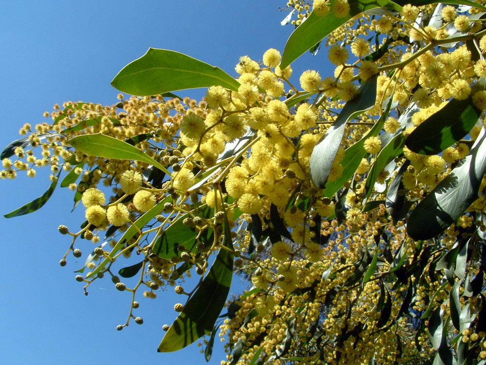
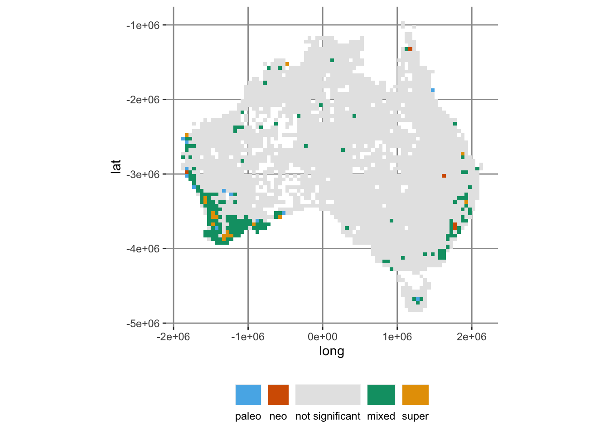

library(canaper)
library(tidyverse)
# Set a seed for reproducibility
set.seed(12345)
# 1. Run randomization test
acacia_rand_res <- cpr_rand_test(
acacia$comm, acacia$phy,
null_model = "curveball",
n_reps = 99, n_iterations = 10000,
tbl_out = TRUE
)
# 2. Classify endemism
acacia_canape <- cpr_classify_endem(acacia_rand_res)Introducing canaper
(Read this blogpost in Japanese)
I am happy to announce that canaper v1.0.0 is now available on CRAN! Although I have authored several R packages and made them available via GitHub, this is my first original package to be on CRAN.
What is canaper you ask?
canaperprovides functions to analyze the spatial distribution of biodiversity, in particular categorical analysis of neo- and paleo-endemism (CANAPE) as described in Mishler et al (2014) doi:10.1038/ncomms5473.canaperconducts statistical tests to determine the types of endemism that occur in a study area while accounting for the evolutionary relationships of species.
(from the package DESCRIPTION).
If that interests you, please read on!
Phylogenetic endemism and CANAPE
Biodiversity is often measured by species richness, or counting the number of species in an area. Likewise, endemism is often quantified by the number of species that are completely restricted (endemic) to an area. However, such purely taxonomic approaches ignore evolutionary history. Thanks to the widespread availability of molecular phylogenies, approaches have recently been developed that quantify biodiversity while taking into account the evolutionary history of species. One such method is phylogenetic endemism (PE; Rosauer et al. 2009), which quantifies endemism based on the range size of branches of a phylogenetic tree instead of species.
An advantage of PE is that it provides insight into the evolutionary processes generating biodiversity. For example, areas with high PE and many short branches may be due to recent speciation (radiation) and are termed neo-endemic. In contrast, areas with high PE and many long branches may be due to extinction of previously widespread lineages and are termed paleo-endemic. A method to detect these areas developed by Mishler et al. (2014) is called CANAPE (“Categorical Analysis of Neo- and Paleo-Endemism”).
The goal of canaper is to conduct CANAPE in R.
Example: Australian Acacia

canaper comes with the same dataset that was analyzed in the original CANAPE paper, a community (species \(\times\) sites) matrix and phylogenetic tree of Australian Acacia1 (Mishler et al. 2014). We will use this for a quick demo2.
I won’t go into the details here, but you can read more about this example on the canaper website.
The entire CANAPE workflow can be run with just two commands, cpr_rand_test() and cpr_classify_endem():
Let’s have a look at some of the output.
cpr_rand_test() returns a bunch (54 to be exact!) of metrics about each site in the community matrix, including PE:
acacia_rand_res# A tibble: 3,037 × 55
site pd_obs pd_rand_mean pd_rand_sd pd_obs_z pd_obs_c_upper pd_obs_c_lower
<chr> <dbl> <dbl> <dbl> <dbl> <dbl> <dbl>
1 -1025… 0.0145 0.0227 0.00506 -1.62 1 98
2 -1025… 0.0382 0.0497 0.00745 -1.54 8 91
3 -1025… 0.0378 0.0369 0.00635 0.138 55 44
4 -1025… 0.0570 0.0613 0.00829 -0.517 33 66
5 -1025… 0.0409 0.0419 0.00614 -0.172 41 58
6 -1025… 0.00998 0.0101 0.00193 -0.0429 49 48
7 -1025… 0.0187 0.0225 0.00393 -0.958 19 80
8 -1025… 0.0434 0.0536 0.00902 -1.14 15 84
9 -1025… 0.0111 0.0101 0.00197 0.495 81 18
10 -1025… 0.0903 0.0876 0.0112 0.240 61 38
# ℹ 3,027 more rows
# ℹ 48 more variables: pd_obs_q <dbl>, pd_obs_p_upper <dbl>,
# pd_obs_p_lower <dbl>, pd_alt_obs <dbl>, pd_alt_rand_mean <dbl>,
# pd_alt_rand_sd <dbl>, pd_alt_obs_z <dbl>, pd_alt_obs_c_upper <dbl>,
# pd_alt_obs_c_lower <dbl>, pd_alt_obs_q <dbl>, pd_alt_obs_p_upper <dbl>,
# pd_alt_obs_p_lower <dbl>, rpd_obs <dbl>, rpd_rand_mean <dbl>,
# rpd_rand_sd <dbl>, rpd_obs_z <dbl>, rpd_obs_c_upper <dbl>, …cpr_classify_endem() appends another column, endem_type, that describes the various endemism types. Let’s count how many of each type was observed:
count(acacia_canape, endem_type)# A tibble: 5 × 2
endem_type n
<chr> <int>
1 mixed 176
2 neo 5
3 not significant 2827
4 paleo 12
5 super 17This is what a map of those various endemism types looks like:
Code
# Fist do some data wrangling to make the results easier to plot
# (add lat/long columns)
acacia_canape <- acacia_canape |>
separate(site, c("long", "lat"), sep = ":") |>
mutate(across(c(long, lat), parse_number))
# Tweak the plot theme
theme_update(
panel.background = element_rect(fill = "white", color = "white"),
panel.grid.major = element_line(color = "grey60"),
panel.grid.minor = element_blank()
)
ggplot(acacia_canape, aes(x = long, y = lat, fill = endem_type)) +
geom_tile() +
# cpr_endem_cols_4 is a CVD-friendly color palette in canaper
scale_fill_manual(values = cpr_endem_cols_4) +
coord_fixed() +
guides(
fill = guide_legend(title.position = "top", label.position = "bottom")
) +
theme(legend.position = "bottom", legend.title = element_blank())
rOpenSci
Another first for me was submitting my package to rOpenSci, an organization that promotes and supports research software written with R. I can’t recommend rOpenSci highly enough for anyone interested in publishing their own R package for research.
First, rOpenSci provides extensive documentation for authoring scientific R packages as well as automated checks. Just going through this process alone significantly improved my code.
Second, packages submitted to rOpenSci undergo thorough and open code review, which lead me to several improvements I would have otherwise never thought of3.
Finally, the rOpenSci community is highly active and welcoming, with community calls, co-working sessions, and a lively Slack workspace.
So please check it out, and a big thank-you to rOpenSci!
More information
For more information about canaper, please see the GitHub repo, package website, and preprint.
References
Mishler, Brent D, Nunzio Knerr, Carlos E. González-Orozco, Andrew H. Thornhill, Shawn W. Laffan, and Joseph T. Miller. 2014. “Phylogenetic Measures of Biodiversity and Neo- and Paleo-Endemism in Australian Acacia.” Nature Communications 5: 4473. https://doi.org/10.1038/ncomms5473.
Rosauer, Dan, Shawn W. Laffan, Michael D. Crisp, Stephen C. Donnellan, and Lyn G. Cook. 2009. “Phylogenetic Endemism: A New Approach for Identifying Geographical Concentrations of Evolutionary History.” Molecular Ecology 18 (19): 4061–72. https://doi.org/10.1111/j.1365-294X.2009.04311.x.
Reproducibility
Footnotes
Acacia is the largest genus of flowering plants in Australia, with nearly 1,000 species↩︎
The settings used here are for demonstration purposes only, and not suitable for a thorough analysis of this dataset↩︎
Thanks to reviewers Klaus Schliep and Luis Osorio, and editor Toby Hocking↩︎
Reuse
Citation
BibTeX citation:
@online{2022,
author = {},
title = {Canaper Is on {CRAN}},
date = {2022-10-07},
url = {https://www.joelnitta.com/posts/canaper/},
langid = {en}
}
For attribution, please cite this work as:
“Canaper Is on CRAN.” 2022. October 7, 2022. https://www.joelnitta.com/posts/canaper/.